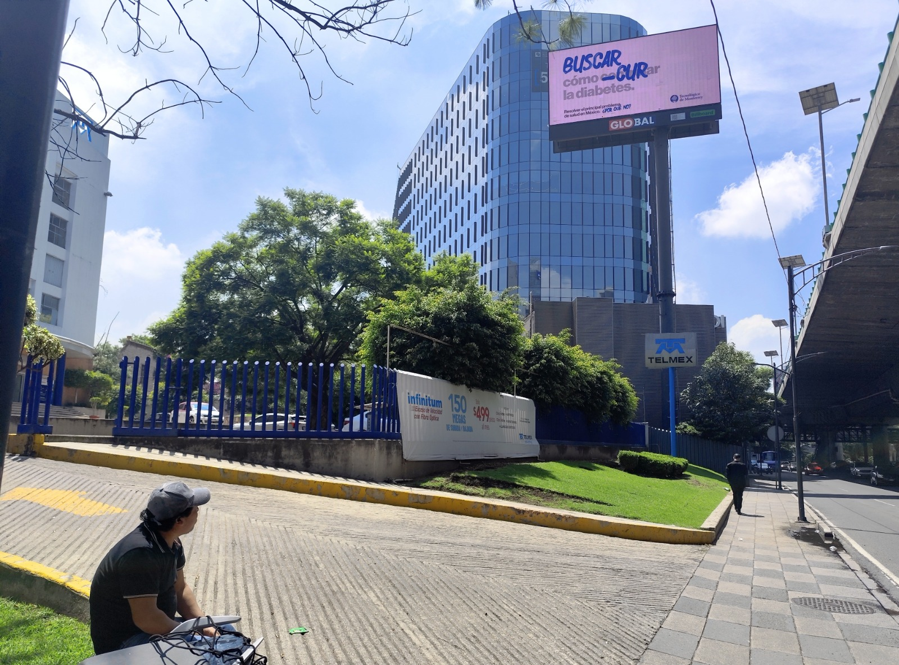

Monitoreo de publicidad exterior
en toda la CDMX y Zona Metro
Verificamos en campo que tus vallas, espectaculares, lonas y bardas estén activos y visibles durante toda la vigencia de tu campaña, con evidencia fotográfica geolocalizada y alertas de incidencias en tiempo real.
¿Qué es el monitoreo de publicidad exterior?
Mucho más que una foto: es la verificación sistemática de que tu inversión en OOH realmente está generando impacto.
El monitoreo de publicidad exterior (OOH, Out-of-Home) es el proceso sistemático de verificar en campo que tus anuncios —vallas, espectaculares, bardas pintadas, lonas, puentes peatonales y mobiliario urbano— se encuentran activos, visibles y en condiciones técnicas y estéticas óptimas durante toda la vigencia de la campaña.
En el mercado mexicano, donde una campaña exterior en CDMX puede representar inversiones de cientos de miles de pesos, es frecuente encontrar anuncios dañados por condiciones climáticas, vandalismo, decoloración o fallas en la iluminación nocturna. Sin verificación, estas incidencias pasan desapercibidas y la marca sigue pagando por espacios que no generan impacto real.
Nuestro servicio documenta cada punto de exposición con fotografía profesional con timestamp, geolocalización GPS precisa y registro del estado del material, generando un expediente verificable que sirve como respaldo ante el proveedor de espacios.

Beneficios concretos para tu campaña OOH
Cada incidencia no detectada es inversión perdida. Nuestro monitoreo transforma eso en evidencia accionable.
Evidencia de exposición real
Comparamos la condición de cada anuncio contra los lineamientos acordados. Si hay daños, obstrucción o decoloración, lo sabes antes de cerrar el ciclo de campaña y puedes exigir compensación.
Recuperación de inversión
Las marcas sin monitoreo pueden perder hasta el 25% del impacto contratado por incidencias no reportadas. Con evidencia en mano, negocias bonificaciones o reposiciones con el proveedor.
Alertas y corrección rápida
Cuando detectamos un problema —apagado, vandalismo o instalación incorrecta— notificamos de inmediato al contacto designado con evidencia adjunta para gestión ágil.
Reportes para dirección
Nuestros informes incluyen galería fotográfica organizada, mapa de ubicaciones y resumen ejecutivo por campaña, facilitando la presentación de resultados a equipos directivos.
Respaldo legal y comercial
El expediente fotográfico con timestamp y GPS funciona como soporte documental en caso de disputas con el proveedor sobre tiempos de exposición o condiciones del material.
Supervisores certificados
Nuestros supervisores reciben capacitación continua en fotografía de campo, gestión de incidencias y uso de tecnología de geolocalización para garantizar la calidad de cada visita.
Cómo funciona el monitoreo de publicidad exterior
Un proceso estructurado en 5 pasos que garantiza cobertura total y evidencia verificable en cada punto.
Recepción del brief
Nos compartes el listado de ubicaciones, fechas de campaña y lineamientos de imagen. Diseñamos la ruta y frecuencia de visitas óptima.
Visita inicial (48 h)
Primera visita en las primeras 48 horas del inicio de campaña. Fotografiamos desde el ángulo de mayor visibilidad e impacto al público.
Monitoreo continuo
Visitas intermedias según la duración de tu campaña. Cada visita genera registro fotográfico con coordenadas GPS y evaluación del estado del material.
Alerta de incidencias
Al detectar un problema notificamos de inmediato con evidencia fotográfica adjunta. Gestionamos el seguimiento hasta confirmar la resolución.
Reporte final
Al cierre entregamos el expediente completo: galería ordenada por ubicación, mapa GPS, resumen de incidencias y porcentaje de cumplimiento de la campaña.
Monitoreo OOH en toda la Zona Metropolitana de la CDMX
8 supervisores activos diariamente, 300+ visitas mensuales en las 16 alcaldías y principales municipios del Estado de México.
Ciudad de México — 16 Alcaldías
Estado de México — Municipios clave
¿Para qué tipo de campañas es ideal el monitoreo exterior?
Cualquier campaña OOH activa en CDMX se beneficia de verificación en campo. Estos son los casos de mayor impacto.
Lanzamientos de producto
Campañas masivas donde el 100% de los puntos debe estar activo simultáneamente el día del lanzamiento. Cualquier falla impacta directamente en el awareness inicial.
Ejes viales principales
Insurgentes, Reforma, Periférico y vías de alto tráfico donde el valor por impacto es máximo y cada día fuera de operación representa pérdida significativa.
Campañas con SLA contractual
Cuando el proveedor de espacios garantiza porcentaje de disponibilidad, el monitoreo genera la evidencia para exigir cumplimiento o bonificaciones ante incumplimiento.
Cobertura en zonas de alta rotación
Colonias como Polanco, Santa Fe, Roma y Condesa concentran la mayor densidad de espacios OOH premium. Con supervisores distribuidos por zona, garantizamos visitas en las 16 alcaldías sin depender de un solo operador.
Preguntas frecuentes sobre monitoreo de publicidad exterior
¿Qué incluye el servicio de monitoreo de publicidad exterior en CDMX?
Incluye visitas en campo a cada punto de exposición, fotografía profesional con timestamp y GPS, reporte del estado del anuncio y notificación inmediata de incidencias como daños, ocultamiento o apagado.
¿Con qué frecuencia realizan las visitas de monitoreo?
Realizamos monitoreo inicial, intermedio y final según la duración de tu campaña. Para campañas de larga duración ofrecemos visitas semanales o quincenales ajustadas al presupuesto.
¿Cubren municipios del Estado de México además de CDMX?
Sí. Además de las 16 alcaldías de la CDMX operamos en Ecatepec, Naucalpan, Tlalnepantla, Nezahualcóyotl, Atizapán, Coacalco, Cuautitlán Izcalli y Huixquilucan, entre otros municipios.
¿Qué pasa si encuentran un anuncio dañado o apagado?
Generamos una alerta inmediata con evidencia fotográfica y coordenadas GPS. Notificamos al contacto designado y realizamos una visita de seguimiento para confirmar la resolución del problema.
¿El reporte sirve como respaldo ante el proveedor de espacios?
Sí. El expediente fotográfico con timestamp y GPS es evidencia verificable ante el proveedor en caso de disputas sobre tiempos de exposición o condiciones del material publicitario contratado.
Servicios complementarios de monitoreo
Cotiza el monitoreo de tu campaña exterior en CDMX
Cuéntanos cuántos puntos tienes y en qué alcaldías. Te respondemos en menos de 24 horas con una propuesta personalizada.